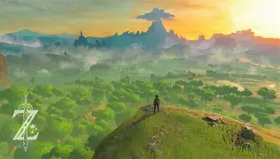
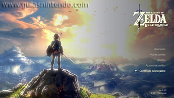
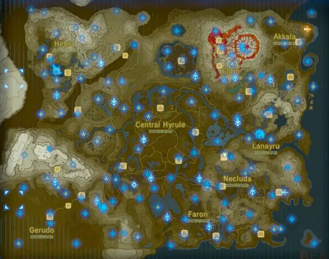

Bienvenido a Hyrule
Este juego es una aventura de mundo abierto donde controlas a Link y exploras un reino lleno de misterios, enemigos y paisajes increíbles.

Tips para jugar
- Explora el mapa con calma
- La "X roja" indica dónde perdiste anteriormente
- Cuidado con viajeros sospechosos 😅
- Mantén presionado "Y" para un ataque fuerte
- Aprovecha cada fogata para cocinar 👨🍳

- Explora todo lo inusual
- Lleva provisiones siempre
- Administra bien tus armas
- Si se rompe la espada maestra la puedes dejar
en el bosque Kolog para que recupere su energía 😉

¿Qué opino respecto al juego?
Sin duda alguna, este es de mis videojuegos favoritos. Me encanta la aventura, los secretos y los paisajes que ofrece. Además, me ayudó a escapar un poco del estrés y me inspiró mucho como jugador.